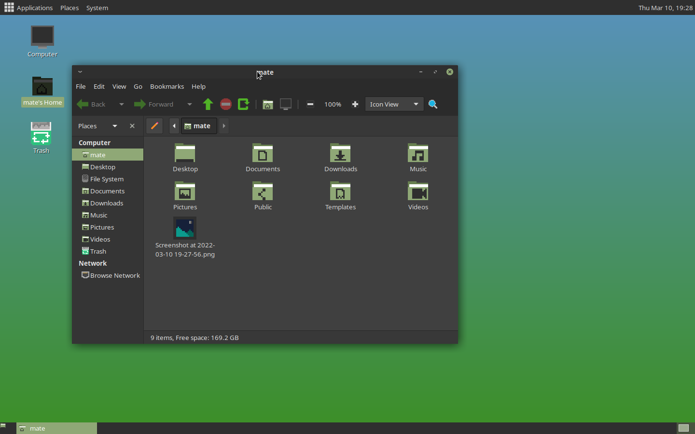
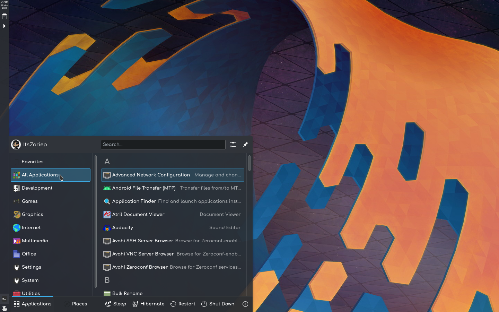

ItzSelenux/pixelitos-icon-theme

pixelitos-icon-theme
Download
Star
Issue
pixelitos-icon-theme is a 16-bit style GTK icon theme


Avise
pixelitos-icon-theme is in alpha state, several icons are missing to be added
if you want a icon, please make an issue
I'm hosted with GitHub Pages.